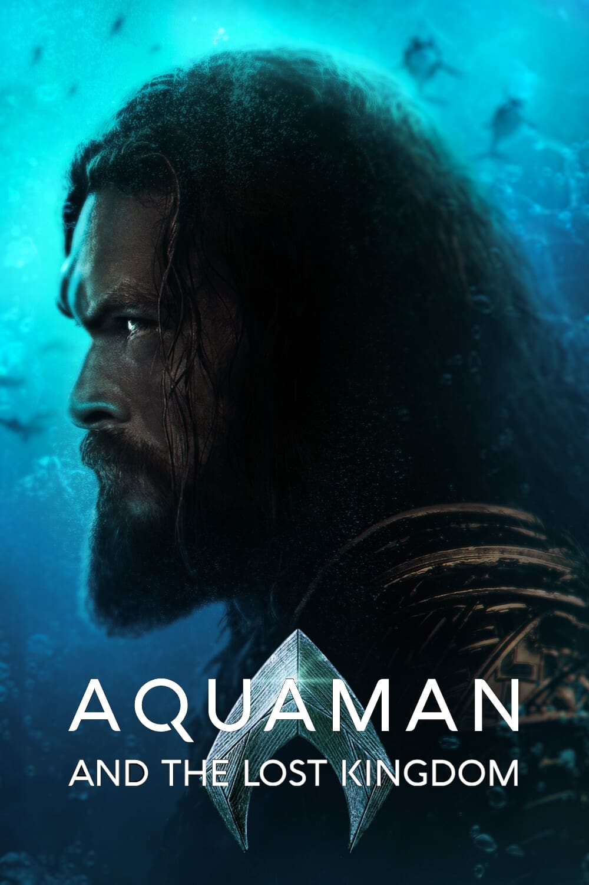
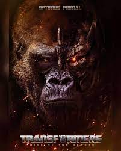
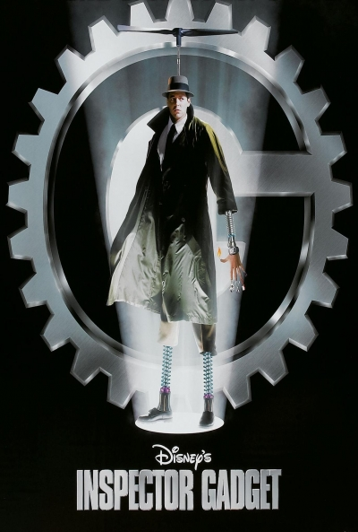
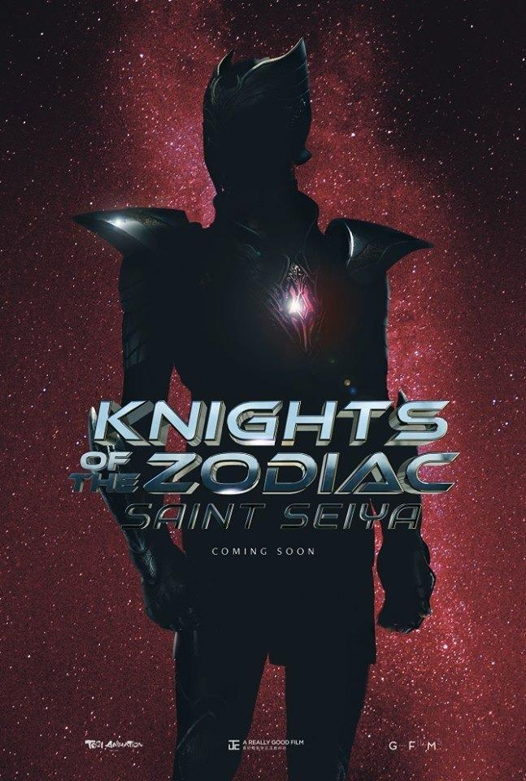
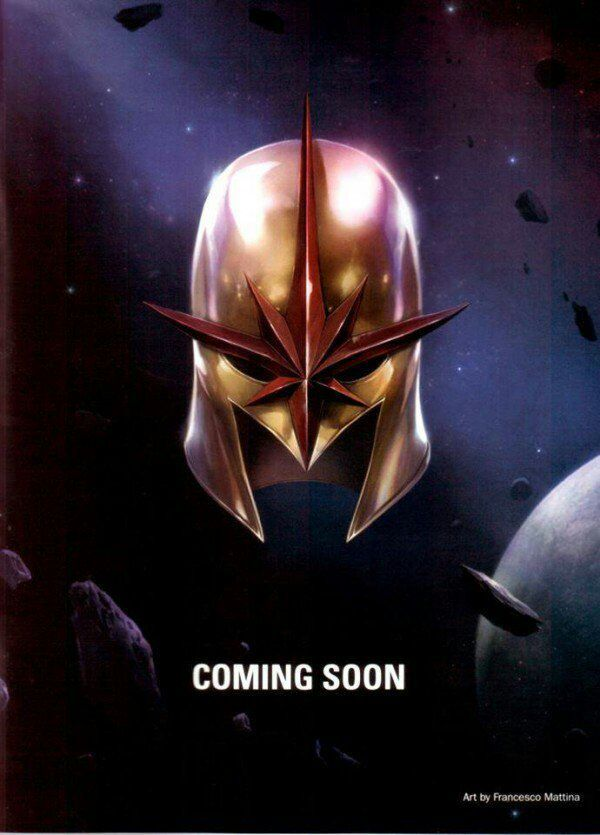
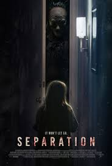

CINEINF

CINEINF
| INICIO |
PELICULAS |
SERIES |
ESTRENOS |
PROXIMAMENTE |
PROXIMAMENTE |

En Aquaman, Arthur Curry, el heredero del reino submarino de Atlantis, debe luchar contra su medio hermano, el Rey Orm, para poder liderar a su gente, ya que este último busca unir los siete reinos submarinos contra el mundo de la superficie.

Dos razas de robots extraterrestres están en guerra. Mientras que los autobots creen en la tolerancia, los decepticons desean exterminar la vida biológica. Cuando la batalla llega hasta la Tierra, el humano Sam Witwicky empezará su particular lucha.

Entertainment y Boulder Media, emitida entre 1983 y 1986. Cuenta las aventuras del Inspector Gadget, un inspector torpe y despistado que es en realidad un cyborg con artilugios (gadgets) biónicos implantados en su cuerpo.

Según cuenta la leyenda, unos jóvenes guerreros poseedores de grandes habilidades son los principales responsables de proteger a Atenea, la diosa de la guerra. Años más tarde, la princesa Saori Kido, reencarnación de la Diosa, se encuentra en peligro y necesita de esa legendaria protección.

Nacido durante la Gran Depresión, Steven Rogers creció como un joven frágil en una familia pobre. Horrorizado por el metraje de los nazis en Europa, Rogers se preparó para alistarse en el ejército. Sin embargo, debido a su fragilidad y enfermedad, fue rechazado

han formado una familia feliz con sus tres pequeños hijos. Después de que uno de sus hijos sufra un terrible accidente y quede sumido en un coma, Josh y Renai empiezan a sufrir experiencias que la ciencia no es capaz de explicar.
VOLVER :)